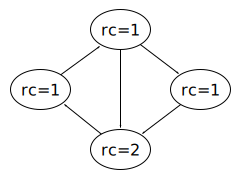

Memory Management Glossary: R¶
A | B | C | D | E | F | G | H | I | J | K | L | M | N | O | P | Q | R | S | T | U | V | W | X | Y | Z
- RAM
Also known as
random access memory.
RAM (random access memory) is a type of physical memory(2) that can be read from and written to.
Similar term
See also
- random access memory
See
RAM.
- ramp allocation
In the MPS
An allocation pattern indicating to the MPS that most of the blocks allocated after the call to mps_ap_alloc_pattern_begin() are likely to be dead by the time of the corresponding call to mps_ap_alloc_pattern_end(). See Ramp allocation.
- rank
In the MPS
A value of mps_rank_t indicating whether a root is ambiguous (mps_rank_ambig()), exact (mps_rank_exact()) or weak (mps_rank_weak()).
- rash
In the MPS
A variety in which no MPS functions assert that their data structures are valid. Select it by defining CONFIG_VAR_RASH. Compare cool and hot.
- raw
See
- reachable
An object is reachable if it is referred to by a root, or is referred to by a reachable object; that is, if it can be reached from the roots by following references.
Reachability is used as an approximation to liveness in tracing garbage collection.
In Java, the reference objects together with ordinary references and finalization generate a hierarchy of reachability that guides the collector(1) on what to do when an object is about to die. There are six strengths:
- strongly reachable;
- softly reachable;
- weakly reachable;
- finalizable;
- phantom reachable;
- unreachable.
Basically, an object is only as reachable as the weakest link in the strongest path from the roots. Note that the Java specification’s description of the reachabilities is a bit patchy, but that’s what it intends. It is unspecified where Java Native Interface’s weak global references fit into this.
Similar term
live.
Opposite term
- read barrier
A read barrier(1) is a block on reading from certain memory(2) locations by certain threads or processes.
Relevance to memory management
Read barriers are used for incremental or concurrent garbage collection.
See also
- read fault
An exception which occurs when reading from an address in virtual memory.
This is probably either a page fault, an invalid page fault or a protection fault.
Similar term
See also
- read-only memory
See
ROM.
- real memory(1)
A system with no virtual memory capability can be said to have real memory.
Historical note
On older architectures, programs could only directly access data in real memory. Where this was inefficient, they had to store data on disk, and sometimes had alternate portions of program image called overlays.
Opposite term
- real memory(2)
See
- reclaim
Reclaiming an object or the memory(1) occupied by it is making it available for reuse after the object is no longer needed.
This word is usually used only in connection with automatic memory management.
Similar term
- recycle
Recycling memory(1) means making it available for reuse after it has been occupied by an object that is no longer needed.
In simple cases, this might simply involve adding a memory(2) block to the free list. Another possibility is unmapping memory so that the backing store can be allocated to another process.
Similar term
- reference
In memory management, a reference is the general term for a link from one object to another. Some programming languages have more specific meanings for the term.
The terms “pointer” and “reference” are often interchangeable, but some programming languages differentiate the two in subtle ways.
In the MPS
A reference is represented in the C interface by a value of type mps_addr_t (an alias for void *) which points to a memory location within the object (typically the base of the object, but for objects with headers this may not be the case). The pointer returned by mps_alloc() and mps_reserve() is a reference to the object allocated.
The client program is free to represent references as it chooses (for example, with tags), provided that during scanning it is able to decode a reference from its representation into the MPS interface representation and encode a reference from the MPS into its representation.
- reference counting
Reference counting systems perform automatic memory management by keeping a count in each object, usually in a header, of how many references there are to the object. Objects to which there are no references cannot be accessed by the mutator; they are therefore dead and may be reclaimed.
The reference count is incremented for each new reference, and is decremented if a reference is overwritten, or if the referring object is recycled. If a reference count falls to zero, then the object is no longer required and can be recycled.
There are four main problems with simple reference counting:
- The reference count field usually has to have limited size, and the system therefore breaks down if the number of possible references to an object is unbounded;
- Reference counting involves an operation on every modification of a pointer, which increases code size, increases demand for memory bandwidth, decreases locality of reference and can be a serious performance penalty (especially in multi-threaded environments where reference count updates require synchronization);
- Every object needs to be slightly larger in order to store the reference count;
- If any objects are part of a cyclic data structure then they will always have a non-zero reference count, and hence won’t be reclaimed when they are dead.
Garbage with non-zero reference counts.
Reference counting has the advantage that it can reclaim objects promptly, and for this reason it is often used to reclaim non-cyclic data structures in file systems, databases and operating system kernels. When there is a possibility of cyclic data structures, reference counting is sometimes used together with a tracing garbage collector that runs infrequently. Such combinations are generally less efficient than using a tracing collector by itself, but the promptness of reference counting may be important.
Pauses due to reference counting are typically fairly short, and it may be appropriate as a form of incremental garbage collection. But removing a single reference may cause the recycling of a large number of objects at once, so it is not suited to real-time systems where minimum pause times must be guaranteed. There are more complex variations of the technique that address this problem.
Reference counting is often used because it can be implemented without any support from the language or compiler. In C++ this can be encapsulated in a class, using a smart pointer. However, it would normally be more efficient to use a tracing garbage collector instead. The performance of reference counting can be improved substantially with compiler support, using refinements such as deferred reference counting, which has been successfully used in Smalltalk and other languages.
Despite the problems, reference counting is often used for distributed garbage collection. This is because refinements such as weighted reference counting require less inter-process communication than tracing.
- reference object
In Java, a reference object (java.lang.ref.Reference) encapsulates a reference to some other object, in order to make the garbage collector handle it specially. In particular, a Java program can use this to detect when the referent becomes unreachable.
Basically, the encapsulated reference is a weak reference(1); it will be cleared by the collector(1) when all other references to the referent have disappeared. However, in order to better control what happens at the end of an object’s lifetime, Java 1.2 provides three classes of reference objects, each with its own peculiarities: SoftReference, WeakReference, and PhantomReference. Each of these classes has its uses in managing memory. The reference objects together with ordinary references and finalization generate a hierarchy of reachability that guides the collector on what to do when an object is about to die.
A reference object can be registered with a queue, and it will be enqueued when the collector determines that the referent is softly, weakly or phantom reachable, as the case may be. A program can use these queues to perform some action when an object is dying. This allows finer control than the older finalization mechanism alone.
Historical note
This feature was introduced in Java 1.2 (confusingly, part of the Java 2 Platform).
See also
- region inference
Region inference is a technique for determining when objects become dead (even if they are reachable) by a static analysis of the program.
Region inference infers a region for each object. When a region dies, all the objects in it are known to be dead, whether reachable or not. Regions obey a strict stack discipline; that is, when a region dies, all younger regions also die. In this way, region inference occupies a middle ground between stack allocation and heap allocation.
- register
A register is a small unit of memory(2) that is attached to a processor and accessible very quickly. Registers typically form the highest level of a computer’s storage hierarchy.
Relevance to memory management
In some programs (for example, those compiled by typical C or C++ compilers), a subset of the registers is always accessible by the mutator and so forms a root.
In the MPS
The scan method for the root containing the registers is hard to write (it depends on the operating system, the processor architecture, and in some cases the compiler), so the MPS provides (on its supported platforms) the function mps_stack_scan_ambig().
- register set partitioning
Run-time systems for garbage-collected languages sometimes partition the set of machine registers a priori into two categories: those always traced and updated by the garbage collector and those ignored by it.
The former are always maintained in a format understood by the collector; the latter are never used to hold references to collectable objects. More complicated schemes are also possible.
This partitioning provides a separation of concerns between the compiler and the garbage collector. The compiler can generate code that produces values the garbage collector would not be able to handle (say, because they have no tags), as long as those values are kept in the ignored registers. The garbage collector can trust that the registers it looks at always contain valid data, and can perform exact garbage collection.
Register set partitioning increases the demand for registers (register pressure), but may reduce the amount of boxing needed.
- relocation
Relocating means moving data from one location to another and updating all references.
Relocation is often performed to avoid external fragmentation.
Program loading sometimes relocates code and static data.
Similar term
See also
- remembered set
A remembered set is the technique of keeping a separate list of interesting references between two sets of objects, so you don’t have to find them by scanning.
Many memory management algorithms depend on partitioning the objects and require special handling for references between partitions. Keeping track of such references in a remembered set eliminates the need to scan the originating partition to find them.
A typical use in generational garbage collection is remembering references from an older generation to a younger one.
Similar term
- remote reference
In the MPS
A reference that logically belongs to a formatted object and so must be fixed when the object is scanned, but which is not stored within the block containing the object. (For example, in an auxiliary table of some sort.)
The MPS does not generally support remote references because those references may be protected and so if scan method attempts to fix them this will hit a barrier(1) and cause a re-entrant call to the MPS.
- replicating garbage collector
A variant of copying garbage collection, which does not destroy the original object when making a copy.
This is useful in an incremental or concurrent collector(1), as no read barrier is required; the mutator can continue to use old objects. The collector uses a write barrier to replicate the writes to the new copies.
See also
- reserved
In a virtual memory system, it is usually possible to hold range of virtual addresses reserved without making it mapped.
Reserving addresses prevents other components of the program using the same addresses, without consuming swap space. This technique is often used in BIBOP schemes, where one might want to reserve a large amount of address space but only sparsely map it.
On some systems there are special calls for reserving; on others one can create mappings that don’t need backing store. For example, on some Unix systems, mmap /dev/zero with no access.
- resident
In a cache(2) system, that part of the cached storage which currently has a copy in the cache is called resident. Ideally, the working set should be resident.
See also
- resident set
- In a virtual memory system, a process’ resident set is that part of a process’ address space which is currently in main memory. If this does not include all of the process’ working set, the system may thrash.
- result code
In the MPS
A value returned from an MPS function, represented by the type mps_res_t. The result code MPS_RES_OK indicates success; other values indicate errors. See Error handing.
- resurrection
An object is said to have been resurrected if it was determined to be finalizable by the garbage collector (that is, the only thing keeping it alive was the fact that it required finalization), but then a new strong reference was created to it.
This can happen via a weak reference(1) or by the finalization procedure storing a permanent copy of its reference to the object.
In the MPS
See Finalization.
- ROM
Also known as
read-only memory.
ROM (read-only memory) is a type of physical memory(2) that can be read from, but not written to. The contents of ROM are usually set in the factory.
See also
RAM.
- root
In tracing garbage collection, a root holds a reference or set of references to objects that are a priori reachable. The root set is used as the starting point in determining all reachable data.
Roots basically comprise the references in the state of the mutator. Typical roots are global variables, other static data, and the control stack.
See also
In the MPS
See Roots.
- root description
In the MPS
The arena uses root descriptions to find references within the client program’s roots. Root descriptions belong to the type mps_root_t.
- root mode
In the MPS
A value of type mps_rm_t describing whether a root is constant, protectable, or both. The root mode tells the MPS whether it may place a barrier(1) on the root.
- root set
The root set is the collection of roots that the mutator declares to the collector(2).
See also

Previous topic
Next topic
Downloads
MPS Kit release 1.111.0
All MPS Kit releases
Issues
Known issues
Issues fixed in release 1.111.0